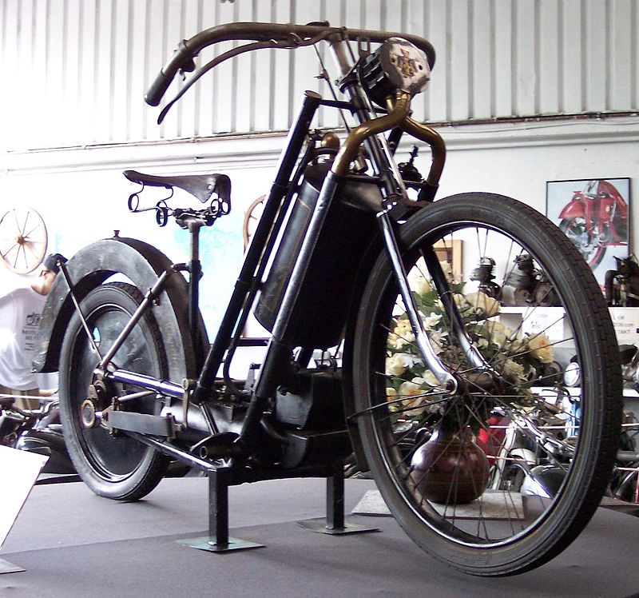
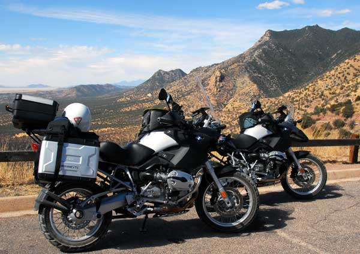

Az elso motorkerékpárt a német Gottlieb Daimler és Wilhelm Maybach tervezte és építette 1885-ben Bad Cannstattban.
Az 1894-ben bemutatott Hildebrand & Wolfmüller volt az első megvásárolható motorkerékpár.
Az első világháborúig az Indian volt a legnagyobb motorkerékpárgyártó. Évente kb. 20000 motort állított elő.
1920-ra a dicsőség a Harley-Davidsoné lett, melynek termékeit 67 országban árusították.
Az 1920-as évek végére, 1930-as évek elejére a DKW lett a legnagyobb gyártó.
